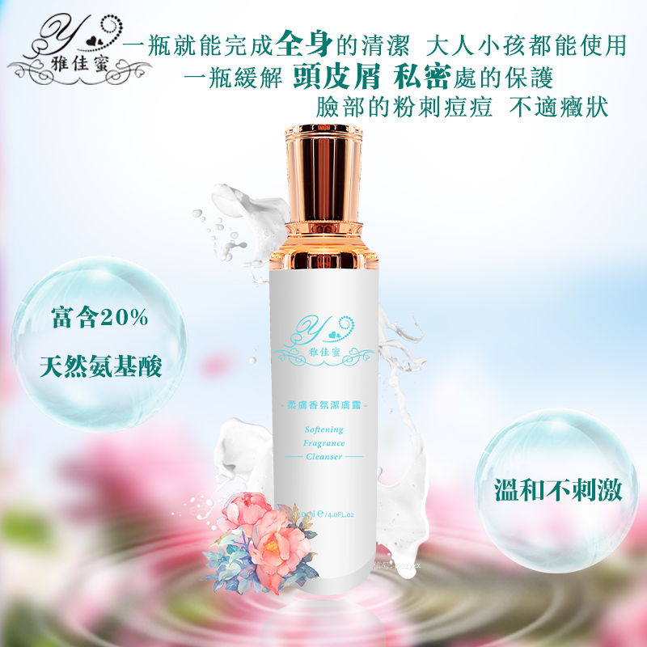

溫柔清潔
讓日常髒污與疲憊隨水流去，為保養留下一個清新的開始。
A GENTLE MOMENT, EVERY DAY
從一天的第一道清潔，到夜晚的細心呵護。雅佳蜜陪你找到自在、從容的保養節奏。

OUR PHILOSOPHY
保養是一段與自己相處的時間。雅佳蜜以清潔、保濕與修護的日常步驟，陪伴你感受肌膚的需要，享受每一次細緻的照顧。
讓日常髒污與疲憊隨水流去，為保養留下一個清新的開始。
以舒適的滋潤感，陪伴肌膚度過每一個忙碌時刻。
在屬於自己的片刻裡，為肌膚多留一點溫柔。
從清潔到保養，找到適合你日常節奏的那一步。
產品資訊依雅佳蜜現有官網整理；實際使用方式及注意事項請以產品包裝標示為準。